CONSTRUCT 3 / COURSE TEMPLATES
Five templates.
Three ways in.
Alinta has made five Construct 3 projects for you to open, take apart and make your own. Each one teaches one idea: a room you can tap, walls you can walk between, a game that reveals text, and a map that tells a story in any order.
GET THE FILES
- Download the
.c3ptemplates from Files in MittUiB ↗. - Open editor.construct.net ↗ and choose Menu ▸ Project ▸ Open, then pick the file.
- Before you change anything: Save as ▸ Download a copy with your own name, so the original stays safe.
The pictures on this page are rebuilt from the project files, using the real images at their real positions. They show what is inside each file, not the Construct editor itself.
ROUTE A / THE ROOM (TEMPLATES 1 TO 3)
TEMPLATE 1 / SceneSetUpForStudents.c3p
An empty room, waiting for you.
Empty room seen from four walls with 17 props parked outside the layout. Students drag props in to set a scene; no events yet.
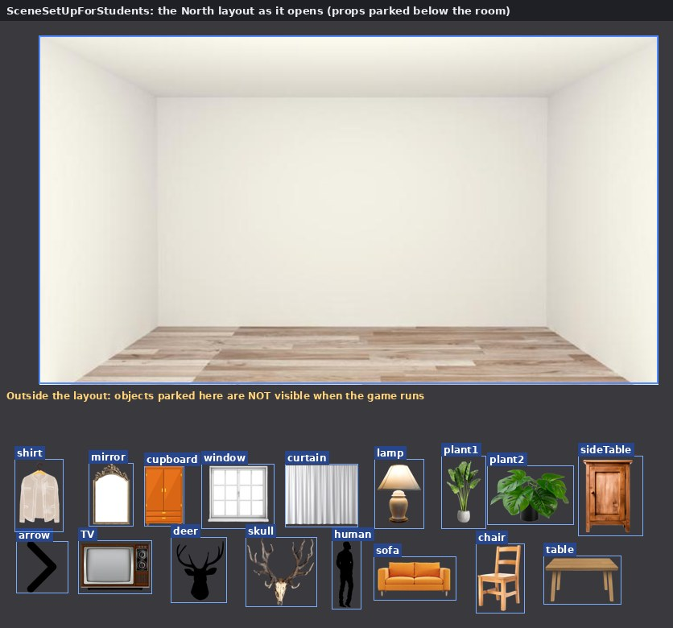
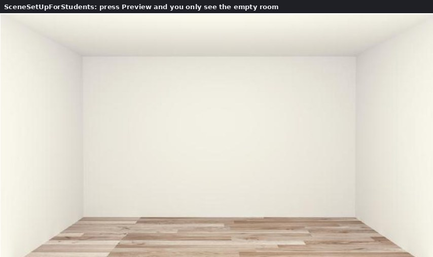
No events yet: this template is about building the scene.
What is inside: 18 objects
- background Sprite
- arrow Sprite
- shirt Sprite
- mirror Sprite
- cupboard Sprite
- window Sprite
- curtain Sprite
- lamp Sprite
- plant1 Sprite
- plant2 Sprite
- sideTable Sprite
- TV Sprite
- deer Sprite
- skull Sprite
- human Sprite
- sofa Sprite
- chair Sprite
- table Sprite
NOTICE THIS
- Everything parked outside the white area is invisible when the game runs. Drag a prop into the room to use it.
- There is no Touch object yet, so nothing can be tapped. You add it yourself (step 3 below).
- All four walls (North, West, South, East) start as identical copies.
YOUR TASK
Choose three or four props and build one wall as a scene from your own life. What should someone notice first?
TEMPLATE 2 / SceneSetUpFullExample.c3p
Tap the cupboard. Pull the curtain.
Furnished North wall where tapping the cupboard opens/closes it and tapping the curtain pulls it aside with a tween.
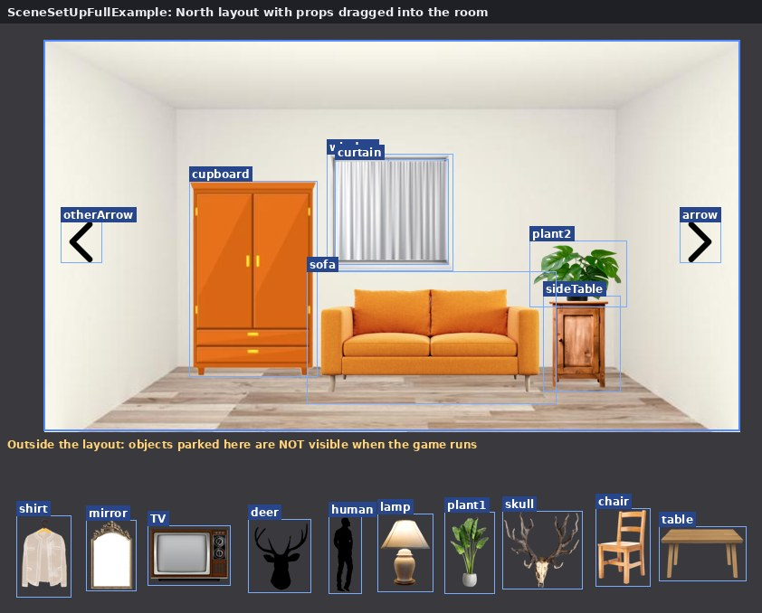
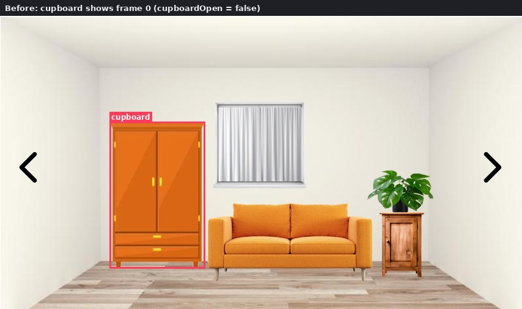
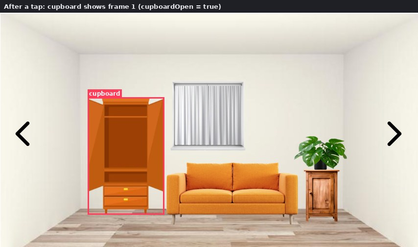
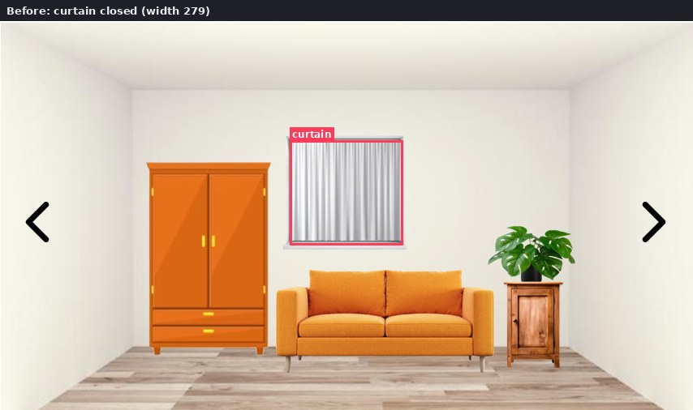
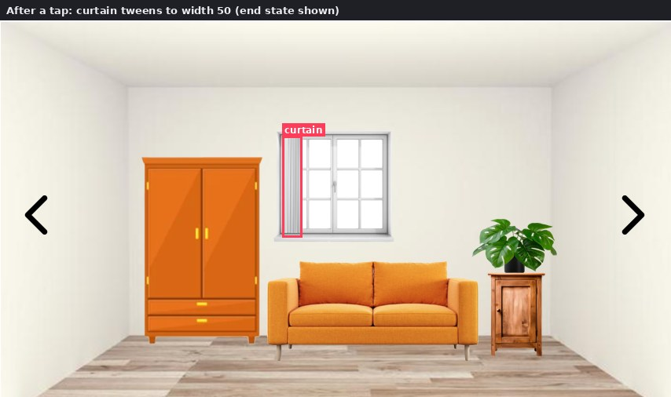
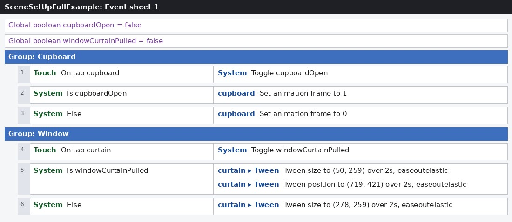
THE EVENT SHEET
Global boolean cupboardOpen = false
Global boolean windowCurtainPulled = false
Group: Cupboard
Group: Window
What is inside: 20 objects
- background Sprite
- arrow Sprite
- shirt Sprite
- mirror Sprite
- cupboard Sprite
- window Sprite
- lamp Sprite
- plant1 Sprite
- plant2 Sprite
- sideTable Sprite
- TV Sprite
- deer Sprite
- skull Sprite
- human Sprite
- sofa Sprite
- chair Sprite
- table Sprite
- curtain Sprite + Tween
- otherArrow Sprite
- Touch Touch
NOTICE THIS
- A global boolean is a switch that remembers what the player has done. Toggle flips it on every tap.
- The open cupboard is frame 1 of the “closed” animation. The “open” animation is never used: a good thing to tidy up.
- Is cupboardOpen is not a trigger, so it runs every tick. Harmless for a picture, but it restarts the curtain tween every tick while true. Try moving the tween actions straight under On tap curtain and compare the feel.
- The tween position (719, 421) only fits where the curtain sits on the North wall.
YOUR TASK
Make one object in your own scene react to a tap, using a global boolean. Then add a Tween to make the change feel alive.
TEMPLATE 3 / SceneSetUpHowToMakeMovementExample.c3p
Walk from wall to wall.
Full example plus navigation: right arrow goes to East, left arrow goes to West.
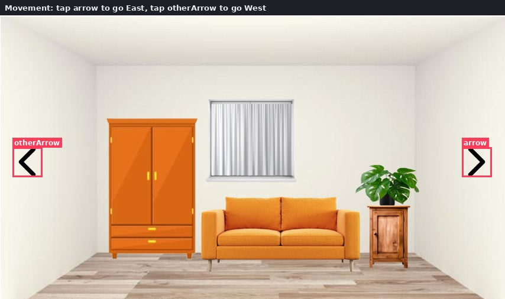
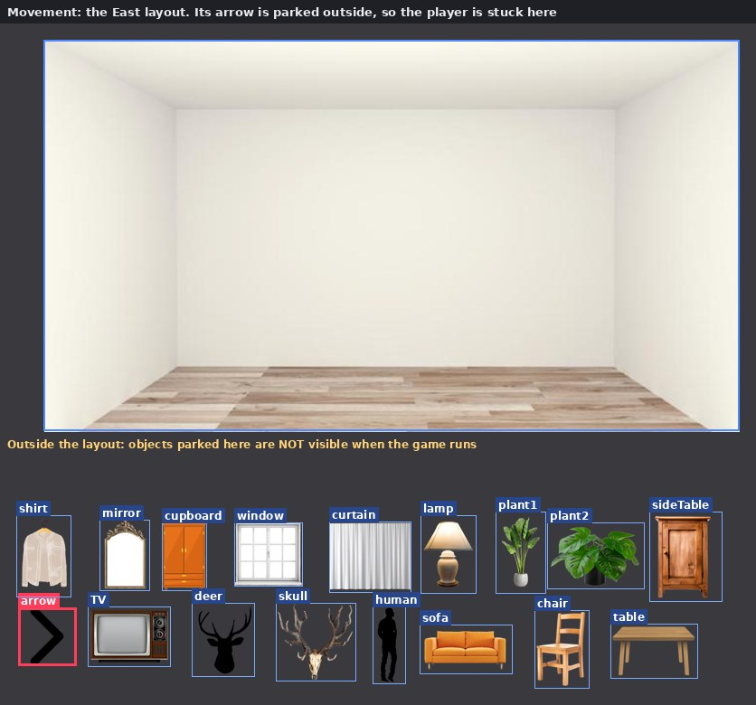
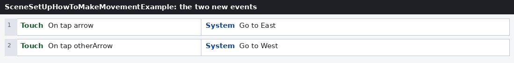
THE EVENT SHEET
Global boolean cupboardOpen = false
Global boolean windowCurtainPulled = false
Group: Cupboard
Group: Window
What is inside: 20 objects
- background Sprite
- arrow Sprite
- shirt Sprite
- mirror Sprite
- cupboard Sprite
- window Sprite
- lamp Sprite
- plant1 Sprite
- plant2 Sprite
- sideTable Sprite
- TV Sprite
- deer Sprite
- skull Sprite
- human Sprite
- sofa Sprite
- chair Sprite
- table Sprite
- curtain Sprite + Tween
- otherArrow Sprite
- Touch Touch
NOTICE THIS
- A layout is a place. Go to layout moves the player between places.
- All four walls share Event sheet 1, so On tap arrow always goes East, from any wall.
- Only North has arrows inside the room. Reach East or West and you cannot get back. That is your puzzle to fix.
YOUR TASK
Give every wall a way on and a way back. You need one arrow object per direction (for example arrowLeft and arrowRight) or a separate event sheet per wall, because one On tap arrow event can only lead to one layout.
ROUTE A / STEP BY STEP
From empty room to a room that reacts.
- Open SceneSetUpForStudents.c3p and double-click the North layout.
- Drag 3-4 props from below the room into it and resize.
- Insert the Touch object.
- Give the cupboard a second frame with the open picture.
- Add global boolean cupboardOpen = false.
- Touch ▸ On tap cupboard → System ▸ Toggle cupboardOpen.
- System ▸ Is cupboardOpen → cupboard ▸ Set animation frame 1; Else → frame 0.
- Preview, tap twice, then add an arrow: On tap arrow → Go to layout.
THE THREE MOST LIKELY MISTAKES
- Nothing happens on tap: Add the Touch object to the project.
- A prop is missing in Preview: It is still parked outside the layout; drag it into the white area.
- Stuck after changing wall: Place an arrow inside the new layout, and use separate arrow objects or event sheets so each goes to the right wall.
More: 12 mistakes everyone makes and 12 clever tricks.
ROUTE B / THE REDACTION GAME
TEMPLATE 4 / redaction_game.c3p
Touch the black bar. Read what was hidden.
A platformer ball falls onto a black redaction bar; touching it reveals hidden text.
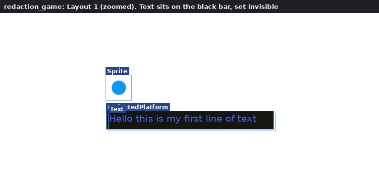
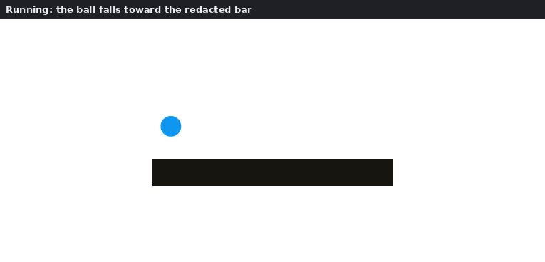
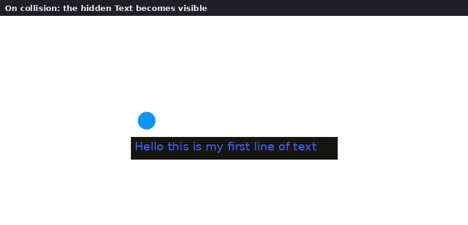
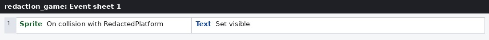
THE EVENT SHEET
What is inside: 4 objects
- Sprite Sprite + Platform
- RedactedPlatform Sprite + Solid
- Text Text
- Keyboard Keyboard
NOTICE THIS
- One event carries the whole idea: touching reveals. Movement becomes reading.
- The ball uses the Platform behaviour with default controls (arrow keys). The Keyboard object is in the project, but no event uses it.
- If the text does not appear every time: a Platform object resting on a Solid may not trigger On collision reliably. Try Sprite ▸ Is overlapping RedactedPlatform at offset (0, 1) or Platform ▸ Is on floor instead.
YOUR TASK
Replace the text with a line of your own. Then add a second bar with a second hidden line. What does it mean that the player has to touch a text to read it?
ROUTE C / THE MAP
TEMPLATE 5 / MappingasNonlinearStorytelling (2).c3p
A map you can read in any order.
Scene-building on UiB-area maps: pick a map and add texts, arrows, paths and drawings to tell a nonlinear story about places. No events.
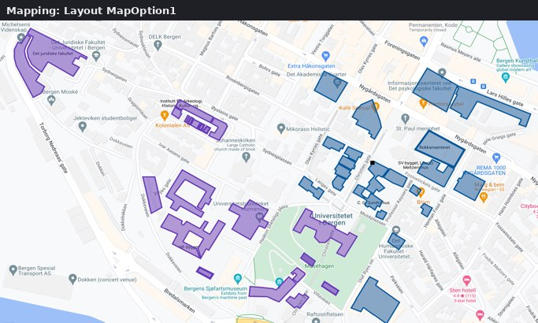
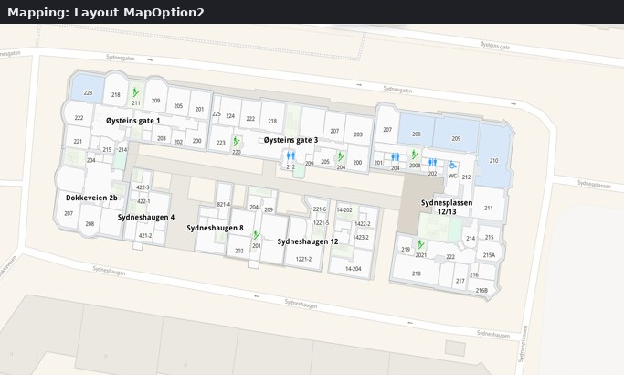
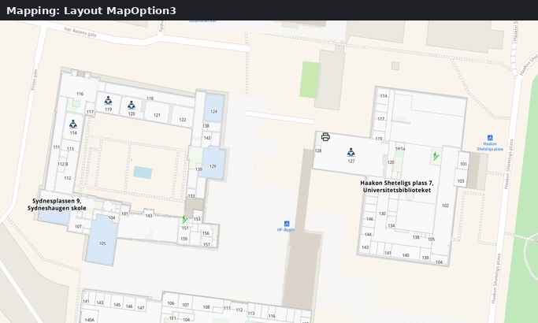
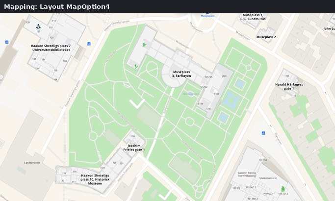
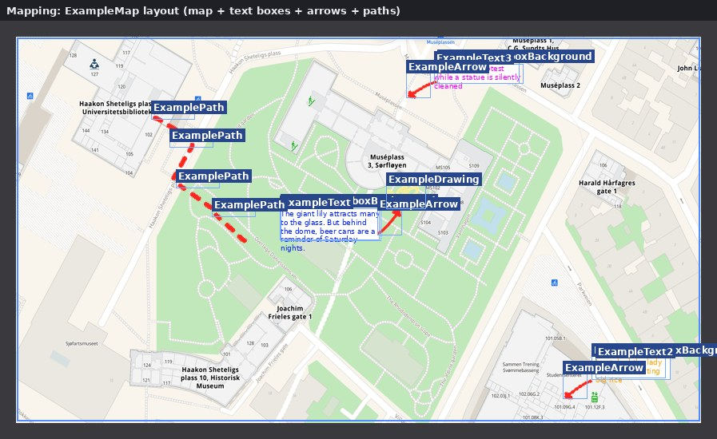
No events yet: this template is about building the scene.
What is inside: 13 objects
- MapOption1 Sprite
- MapOption2 Sprite
- MapOption3 Sprite
- MapOption4 Sprite
- ExampleMap Sprite
- ExampleTextboxBackground Sprite
- ExampleArrow Sprite
- ExamplePath Sprite
- ExampleDrawing Sprite
- ExampleText Text
- ExampleText2 Text
- ExampleText3 Text
- LinkToMazeMap Text
NOTICE THIS
- There are no events: this is about composing a scene, not coding.
- Nothing links the layouts. Use the Preview layout option (in the Preview menu) on the map you are editing.
- The file is about 11.5 MB because of the map images. Give it a moment to open.
- Want your own place instead? The OrMakeYourOwn layout suggests a screenshot from the UiB MazeMap ↗.
YOUR TASK
Choose a map. Place three short texts about real moments in real places, and connect them with arrows or a path. A reader can start anywhere: which order do you hope they choose?
WHY THESE TEMPLATES
What each route teaches.
- The room: a variable is a memory of what the player has done, and a layout is a place.
- The redaction game: a rule like “touch reveals” carries meaning, not just mechanics.
- The map: a map can be read in any order, which is the core of nonlinear storytelling.
Stuck? See when you are unsure: screenshot it for AI, search with the image, or ask your lab assistant.